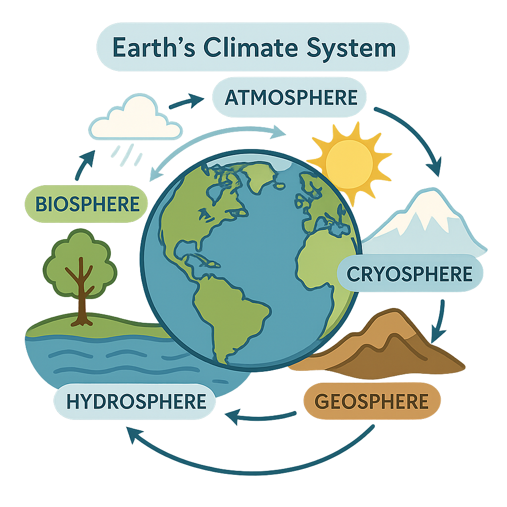
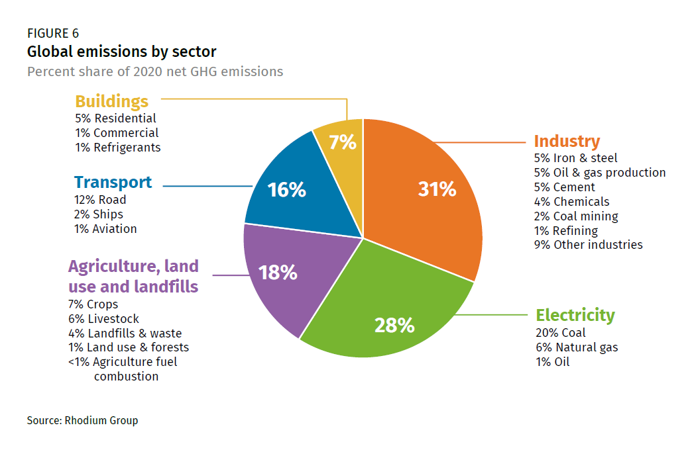
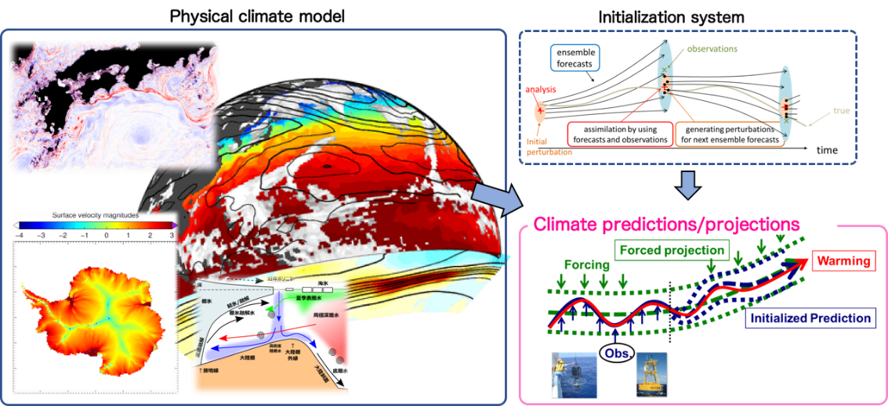

Climate Science: The Science Behind Our Planet’s Future
What is Climate Science?
Climate science is the study of the Earth's climate system the complex interaction between the atmosphere, oceans, land surfaces, and living organisms that determines the planet’s long-term weather patterns. Unlike weather, which describes short-term atmospheric conditions, climate refers to the average conditions over decades or longer.
At its core, climate science aims to understand how natural and human-made factors influence the Earth's climate. These include solar radiation, volcanic activity, greenhouse gases, ocean currents, and human activities such as deforestation and the burning of fossil fuels. Scientists use a combination of observations, theoretical models, and simulations to predict future climate trends and assess the potential impacts on ecosystems, societies, and economies.
With the growing concern over global warming and extreme weather events, climate science plays a crucial role in informing public policy, guiding environmental conservation, and supporting sustainable development. By understanding how our actions affect the climate, we can make better decisions to protect the planet for future generations.
Why it matters
Climate science is key to tackling some of today’s biggest challenges from rising sea levels and melting glaciers to droughts and intense storms. By studying climate, scientists can predict future trends, helping communities prepare for risks and make smart, sustainable choices.
Earth’s Climate System
The Earth’s climate system is composed of the atmosphere, oceans, cryosphere, biosphere, and geosphere. These subsystems interact constantly, exchanging energy and matter. A disruption in one such as deforestation can cascade through the others and affect the entire planet.
Greenhouse Gases
GHGs like carbon dioxide (CO₂), methane (CH₄), and nitrous oxide (N₂O) trap heat in Earth’s atmosphere. Human activities such as fossil fuel combustion and agriculture are increasing these gas concentrations, amplifying the natural greenhouse effect and accelerating global warming.
Scientific Evidence
Thousands of peer-reviewed studies confirm climate change. Observable data includes rising temperatures, melting glaciers, shrinking Arctic ice, coral bleaching, and changing precipitation patterns. NASA and the IPCC compile and analyze this evidence.
Understanding Climate Models
Climate models are complex simulations based on physics, chemistry, and biology. They simulate past climate conditions and forecast future scenarios based on different emissions levels. Models are essential tools used by scientists and policymakers worldwide.
Future Climate Scenarios
Future projections range from a 1.5°C to 4.5°C temperature increase by 2100. These scenarios impact sea level, food security, and biodiversity. Regions may experience more heatwaves, stronger storms, or severe droughts, depending on mitigation success.
Science and Solutions
Climate science supports solutions like renewable energy, carbon sequestration, sustainable agriculture, and resilient infrastructure. Adaptation and mitigation strategies rely on scientific evidence to minimize impacts and protect future generations.
Key Research Institutions
Organizations like the IPCC, NASA, NOAA, and the UK Met Office conduct climate research and provide accessible data. Their work informs international climate policy and educates the public about climate change.
Further Learning
Global Climate Map
This map shows current temperature anomalies compared to the long-term average. It provides a live view of how different regions are warming.